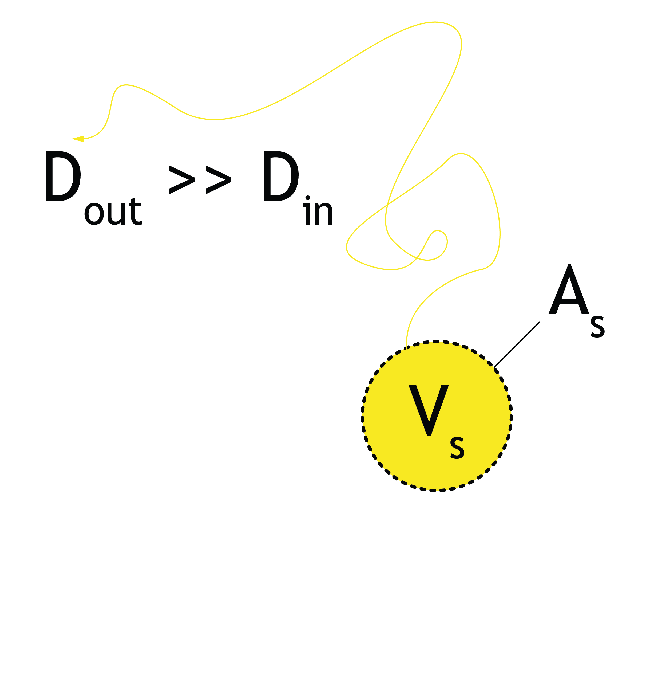
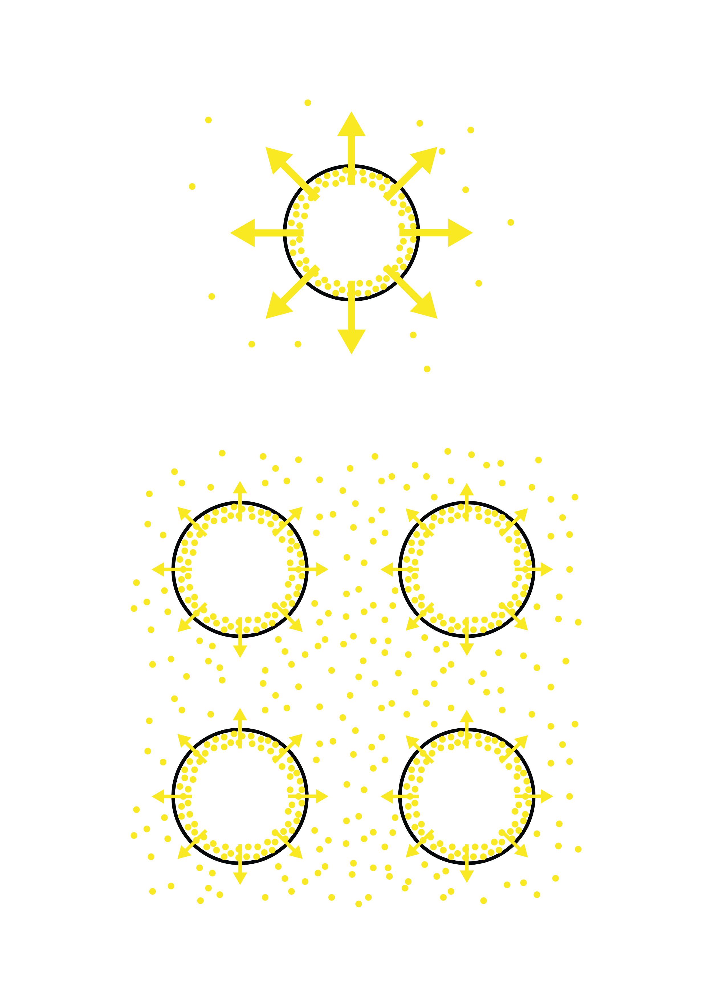
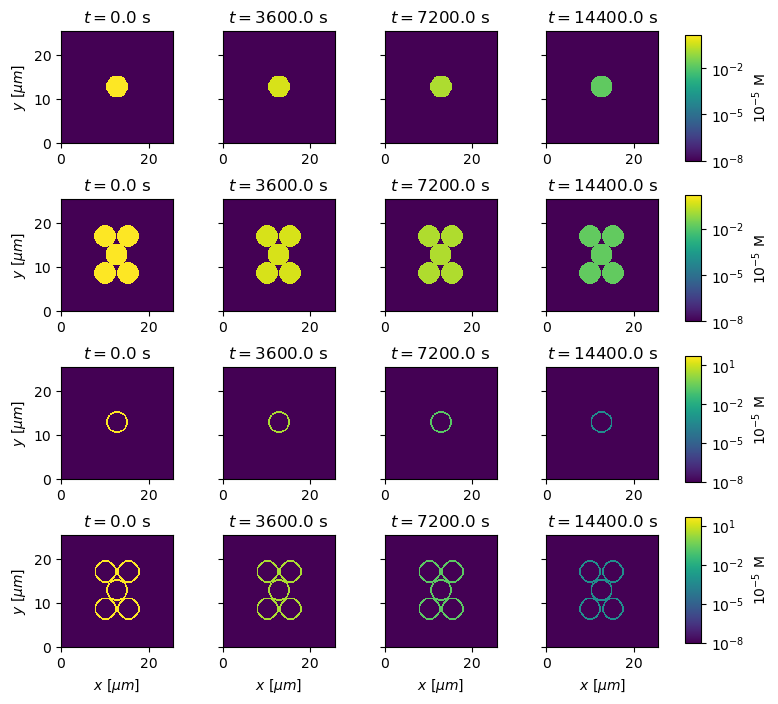

MSc Thesis in Computational Science (UvA/VU)
Supervised by Prof. Dr. Han Wösten, Utrecht University
2024-2025, Amsterdam
During my second Master's programme, Computational Science, I built up on my pre-existing programming knowledge to acquire more advanced skills in scientific modelling and simulation. Seeing mathematics and computer code as the common languages between sciences, I ventured into multiple disciplines throughout the two-year syllabus, including courses in computational biology, stochastic simulation, statistical mechanics, biomolecular simulations and complex systems. The learning outcomes were channeled into my graduation project, which dealt with the modelling of the germination mechanisms of Aspergillus spores. Aspergillus are a common genus of mould, often growing on spoiled food and occasionally presenting a threat to immunocompromised people as an opportunistic pathogen. Surprisingly, its species have a broad range of industrial applications as biomolecular factories, e.g. in producing citric acid and various enzymes, fermentation products such as soy sauce and miso; or simply serve as model organisms for the broader understanding of fungi.


The germination rate of Aspergillus conidia is reportedly influenced by the inducing carbon source in the medium and by an auto-inhibitor produced by the spores. This thesis assesses the plausibility of diffusion-driven mechanisms in timing the action of these signals until germination is enabled. To this end, computational models of spores releasing inhibitor molecules are constructed on multiple scales, first simulating the depletion of inhibitor from a single spore, then exploring the effect of increasing spore culture densities, and eventually inspecting the diffusive outflow in a dense spore cluster. This leads to several observations:

Finally, germination probability models incorporating induction and inhibition are proposed, representing heterogeneities in the spores through random variables. Parameter estimation through global and local optimisation highlights a promising model that fits experimental data under biologically sensible parameters. In this model, an inhibitor falls below a critical value, and an inhibitor-dependent inducing signal rises above an inhibitor-dependent threshold to trigger germination. In an attempt to explain data with both endogenously and exogenously driven 1-octen-3-ol inhibition, no appropriate parameter combination is found, leading to the supposition that in vivo inhibition is more complex than merely saturating the medium with the compound.
More info here.